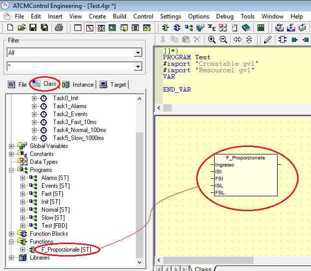
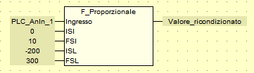

Para utilizar una función dentro de un programma, selecciónela en la pestaña “Class” y arrástrela al programa..

Para la inserción de variables ver el capítulo “Insertar variables en programas FBD – LD – SFC”.
En particular, esta función permite reacondicionar los valores de una señal con los deseados. Por ejemplo, la señal de entrada será una señal de tensión analógica (PLC_AnIn_1) con un rango de 0-10V (ISI - FSI) y se desea reacondicionar esta señal para que tenga un límite inferior/ superior de -200+300 (ISL-FSL).
La variable “Valore_ricondizionato” asumirá un valor entre -200 y +300 dependiendo del valor de la variabile (PLC_AnIn_1).
